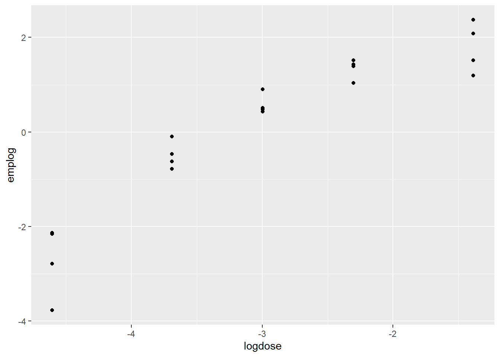

library(tidyverse)
library(arm)
library(Sleuth3)
# library(tidyverse)
library(vcdExtra)
library(magrittr)
# library(arm)
library(datasets)4 Log-Reg II
Learning Objectives
After successful completion of this module, you will be able to:
- Describe how to examine the goodness of fit of a logistic regression model.
- Explain what an empirical logit is, why it’s useful and how to calculate it.
- Describe how to compare two logistic regression models.
- Define over dispersion (or extra-binomial variation), and indicate why it can cause problems for inference in logistic regression.
- List some reasons that counts may exhibit extra-binomial variation.
In R:
- Estimate and interpret the dispersion parameter.
- Create exploratory plots for logistic regression using the empirical logit.
- Use the deviance residuals to examine goodness of fit of the logistic regression model.
- Prepare and submit an R markdown script.
Task list
In order to achieve these learning outcomes, please make sure to complete the following:
Review Module 4 Readings and LecturesSubmit Module 4 HomeworkSubmit Module 4 Lab- Take the Module 4 Content Quiz and
- R Quiz
Participate in the Module 4 Discussion
Practical Stats
For logistic regression, first think of the outcome not as a binary label, but as the probability p that the label is a one.
p is not a linear function of predictors because p will end up outside of zero and one. Instead model p by applying a logistic response or inverse logit fct to ensure the response stays between zero and one.
\[ p = \frac{1}{a + e^{1(\beta_0 ...)}} \]
To get the exponential expression out of the denominator, we consider odds instead of probability. \[ Odds = \frac{prob}{1 - prob} \] \[ Prob = \frac{Odds}{1+Odds} \] Combine this with the logistic response fct to get: \[ odds(Y=1) = e^{\beta_0 ...} \]
The linear function is:
\[ log(odds(Y=1)) = \beta_0 ... \]
The log-odds fct, aka the logit fct, maps p from 0 to 1 to and value. Using a cutoff rule, where any value greater than the rule is classified as 1, we can set a rule for certain values always being classified as 1.
Response is log odds of a binary outcome of 1.
A factor with P levels is represented with P-1 columns. In R levels are all compared to the reference level.
GLMs are characterized by two main components. A probability dist(here binomial) and a link function that maps the response to the predictors(here logit).
The poisson is often used for count data like number of times a user visits a website.
One advantage or log-regs is that it produces a model that can be scored to new data rapidly, without re-computation. Another is the ease of interpretation via the odds ratio.
Log-Regs use maximum likelihood estimates. MLE is a process that tries to find the model that is most likely to have made that data we see. It fins the solution such that the estimated log odds best describes the observed outcome. For a set of data [X_n] and probability model P_theta(X_n) with parameters theta. The goal of MOE is to find the set of theta estimates that maximize P, aka the probability of seeing X_n given the model P. It does this using deviance,
\[ dev = -2log(P_{\hat{\theta}}(X_1, ... X_n)) \] Lower deviance means better fit.
Assessing the model
Assessment is based generalization error.
The p-value for glms should be viewed as a relative indicator of variable importance. There is no RMSE or R-squared. You can train and fit with different models and asses performance. You can use stepwise regression, fit interaction terms or include spline terms. Confounding and cerrelated variables are still issues.
W-4 Lectures
Another Example in R - More Logistic Regression
Code
#
# Email dataset: logisitic regression example
#
#library(devtools)
#install_github("OpenIntroOrg/openintro-r-package", subdir = "openintro")
library(openintro)
library(ggplot2)
library(MASS)
# ?email
names(email) [1] "spam" "to_multiple" "from" "cc" "sent_email"
[6] "time" "image" "attach" "dollar" "winner"
[11] "inherit" "viagra" "password" "num_char" "line_breaks"
[16] "format" "re_subj" "exclaim_subj" "urgent_subj" "exclaim_mess"
[21] "number" Code
xtabs(~to_multiple+spam,data=email) spam
to_multiple 0 1
0 2946 355
1 608 12Code
xtabs(~winner+spam,data=email) spam
winner 0 1
no 3510 347
yes 44 20#| code-fold: true
full1 = glm(
spam~to_multiple + from + cc + sent_email + time + image + attach + dollar +
winner + inherit + viagra + password + num_char + format + re_subj + exclaim_subj +
urgent_subj + exclaim_mess + number,
data = email,
family=binomial(link="logit"))Warning: glm.fit: fitted probabilities numerically 0 or 1 occurredsummary(full1)
Call:
glm(formula = spam ~ to_multiple + from + cc + sent_email + time +
image + attach + dollar + winner + inherit + viagra + password +
num_char + format + re_subj + exclaim_subj + urgent_subj +
exclaim_mess + number, family = binomial(link = "logit"),
data = email)
Coefficients:
Estimate Std. Error z value Pr(>|z|)
(Intercept) -8.912e+01 9.709e+03 -0.009 0.99268
to_multiple1 -2.614e+00 3.278e-01 -7.975 1.52e-15 ***
from1 -2.215e+01 9.709e+03 -0.002 0.99818
cc 1.768e-02 2.244e-02 0.788 0.43070
sent_email1 -2.028e+01 4.008e+02 -0.051 0.95965
time 8.365e-08 2.865e-08 2.919 0.00351 **
image -1.811e+00 5.985e-01 -3.027 0.00247 **
attach 7.061e-01 1.455e-01 4.852 1.23e-06 ***
dollar -5.955e-02 2.575e-02 -2.312 0.02076 *
winneryes 2.027e+00 3.639e-01 5.571 2.53e-08 ***
inherit 3.125e-01 1.549e-01 2.017 0.04366 *
viagra 2.846e+00 2.216e+03 0.001 0.99898
password -8.475e-01 2.970e-01 -2.854 0.00432 **
num_char -4.840e-02 9.540e-03 -5.074 3.90e-07 ***
format1 -6.952e-01 1.496e-01 -4.648 3.35e-06 ***
re_subj1 -1.691e+00 3.859e-01 -4.383 1.17e-05 ***
exclaim_subj 2.305e-01 2.411e-01 0.956 0.33891
urgent_subj1 3.960e+00 1.321e+00 2.999 0.00271 **
exclaim_mess 7.754e-03 1.525e-03 5.084 3.69e-07 ***
numbersmall -1.253e+00 1.543e-01 -8.117 4.76e-16 ***
numberbig -3.448e-01 2.185e-01 -1.578 0.11466
---
Signif. codes: 0 '***' 0.001 '**' 0.01 '*' 0.05 '.' 0.1 ' ' 1
(Dispersion parameter for binomial family taken to be 1)
Null deviance: 2437.2 on 3920 degrees of freedom
Residual deviance: 1653.1 on 3900 degrees of freedom
AIC: 1695.1
Number of Fisher Scoring iterations: 19The warning about zero or one is ok, we know probabilities can be zero or one, but check the convergence.
Here it is 19 which is finite and ok.
The variables that are not significant shouldn’t be removed all at the same time.
MASS has a function to remove variables one at a time with -.
#| code-fold: true
full2 = update(full1,~.-from-cc-sent_email-viagra-exclaim_subj)Warning: glm.fit: fitted probabilities numerically 0 or 1 occurredsummary(full2)
Call:
glm(formula = spam ~ to_multiple + time + image + attach + dollar +
winner + inherit + password + num_char + format + re_subj +
urgent_subj + exclaim_mess + number, family = binomial(link = "logit"),
data = email)
Coefficients:
Estimate Std. Error z value Pr(>|z|)
(Intercept) -9.438e+01 3.650e+01 -2.585 0.009726 **
to_multiple1 -2.563e+00 3.138e-01 -8.168 3.13e-16 ***
time 7.071e-08 2.746e-08 2.575 0.010017 *
image -2.100e+00 9.013e-01 -2.330 0.019810 *
attach 4.678e-01 9.764e-02 4.791 1.66e-06 ***
dollar -5.298e-02 2.459e-02 -2.154 0.031215 *
winneryes 2.144e+00 3.605e-01 5.946 2.75e-09 ***
inherit 3.434e-01 1.523e-01 2.255 0.024143 *
password -8.109e-01 3.005e-01 -2.699 0.006956 **
num_char -3.968e-02 8.925e-03 -4.446 8.77e-06 ***
format1 -9.453e-01 1.398e-01 -6.763 1.36e-11 ***
re_subj1 -3.045e+00 3.835e-01 -7.941 2.01e-15 ***
urgent_subj1 3.801e+00 1.063e+00 3.577 0.000348 ***
exclaim_mess 6.614e-03 1.453e-03 4.551 5.34e-06 ***
numbersmall -8.639e-01 1.449e-01 -5.962 2.49e-09 ***
numberbig -2.278e-02 2.087e-01 -0.109 0.913067
---
Signif. codes: 0 '***' 0.001 '**' 0.01 '*' 0.05 '.' 0.1 ' ' 1
(Dispersion parameter for binomial family taken to be 1)
Null deviance: 2437.2 on 3920 degrees of freedom
Residual deviance: 1815.3 on 3905 degrees of freedom
AIC: 1847.3
Number of Fisher Scoring iterations: 8Warning is still ok. Convergence was better, it converged in less iterations.
The number of significant factors may mean it’s better, but let’s look at the drop in deviance test.
#| code-fold: true
anova(full2, full1)| Resid. Df | Resid. Dev | Df | Deviance |
|---|---|---|---|
| 3905 | 1815.327 | NA | NA |
| 3900 | 1653.086 | 5 | 162.2409 |
1 - pchisq(162, 5)[1] 0Smaller first, then full. Deviane 162 and df 5. DF is difference in size between mocels.
162 in pchisq is zero shows the full model is better.
Pulling by significance wan’t the best idea here.
#| code-fold: true
# fitted values
fits1 = fitted(full1)
fits2 = predict.glm(full1)
fits3 = predict.glm(full1,type="response")
head(cbind(fits1,fits2,fits3)) fits1 fits2 fits3
1 0.12002923 -1.992153 0.12002923
2 0.05467984 -2.850029 0.05467984
3 0.06900556 -2.602066 0.06900556
4 0.06797927 -2.618152 0.06797927
5 0.10455872 -2.147568 0.10455872
6 0.10519712 -2.140768 0.10519712fits4 = exp(fits2)/(1 + exp(fits2))
head(cbind(fits1,fits2,fits3,fits4)) fits1 fits2 fits3 fits4
1 0.12002923 -1.992153 0.12002923 0.12002923
2 0.05467984 -2.850029 0.05467984 0.05467984
3 0.06900556 -2.602066 0.06900556 0.06900556
4 0.06797927 -2.618152 0.06797927 0.06797927
5 0.10455872 -2.147568 0.10455872 0.10455872
6 0.10519712 -2.140768 0.10519712 0.10519712Fitted values from log reg. Fitted values are the values we get if we apply the observations to the model that we fitted.
Using full one, fitted and predict.glm will give fitted values. predict.glm can have type set.
Fits one and fits 2 are the same, but fits 2 is different. Fits one gives the est fits of the log reg model of probabilities. fitted returns on the probability scale. By setting type to response we get the same thing.
predict.glm will give log(odds).
Fits 4 is a back transformation of log(odds). It is now the same as the other two.
Ensure you know the scale you are looking at.
df <- ex2116Dose Response Relationships
Dose responses are a particular type of log-reg.
Ex: toxic effects of mold. Fish in tanks get dosed. After a year, they count the fish with tumors. 5 doses, 4 tanks at each dose. They graph proportion with tumors by dose for the 5 tanks. It’s on a multiplicative scale, at each step the dose doubles. Log dose is more linear. Responses are binomial counts. Number with tumors out of a number at a dose. We have been talking Bernoulli. Binomial is the sum independent Bernoulli random variables with the same probability of success.
With binomial, we can plot emperical logits.
\[ log(\frac{x}{n-x}) \] We can plot the empirical logit against explanatory info like log(dose).
Fitting the model to the data by log dose, but including a poly function for the curve.
# plot(Tumor, Dose, data = df)df <- ex2116 |> mutate(dose = Dose,
tumor = Tumor,
notumor = Total - Tumor,
tankid = factor(1:nrow(df)),
logdose = log(Dose),
emplog = log((Tumor)/(Total - Tumor)),
ld2 = log(Dose)^2)
df |> ggplot() +
aes(x = logdose, y = emplog) +
geom_point()
mod1 <- glm(data = df,
cbind(tumor, notumor) ~ logdose + ld2,
family = "binomial")
mod1 |> summary()
Call:
glm(formula = cbind(tumor, notumor) ~ logdose + ld2, family = "binomial",
data = df)
Coefficients:
Estimate Std. Error z value Pr(>|z|)
(Intercept) 1.02921 0.49343 2.086 0.03699 *
logdose -1.03048 0.35743 -2.883 0.00394 **
ld2 -0.39195 0.06136 -6.388 1.68e-10 ***
---
Signif. codes: 0 '***' 0.001 '**' 0.01 '*' 0.05 '.' 0.1 ' ' 1
(Dispersion parameter for binomial family taken to be 1)
Null deviance: 667.195 on 19 degrees of freedom
Residual deviance: 26.048 on 17 degrees of freedom
AIC: 119.45
Number of Fisher Scoring iterations: 4Both the squared term and log odds seam important.
Deviance Goodness-of-fit
A way to evaluate the adequacy of a model.
Before interpretation check resids and adequacy.
In logistic regression, with binary or Bernoulli, resids aren’t useful because everyting is zero or one. With binomial counts, resids are useful.
There is also no need to worry about over-dispersion in binary logistic regression. There is when dealing with binomial responses.
There are several types of resids. Two are deviance and Pearson resids. R defaults to Pearson. We use deviance more often. R reports sum of squared deviance resids.
Resids are what is left after we fit a model.
For the fish example: 3 models on n binomial counts, the number of counts. 20 binomial counts in the fish set.
- logit(p_i) = beta_0, one param.
- logit(p_i) = beta_0 + beta_1X_1 + … + beta_pX_k, to 20, k params.
- logit(p_i) = alpha_i, n params.
The null deviance corresponds to 1, with one parameter.
The residual deviance corresponds to k = 20.
To compare with a drop in deviance test, null dev - resid rev in a chi squared with k-1 df, where the null and resid deviances come from fitting the logistic reg model with k - 1 explanatory variables.
For the model with k params vs the model with n params. Comparing 2 to 3 asks if 2, a linear structure, is adequate for explaining the variation in the data.
The resid deviance from the model with n params is zero. So, the resid dev - 0 = chi square on n-k df.
This gives us a way to compare 2 against the model with a different phat for each observation, the saturated model. This is similar to the goodness of fit test.
Code
mod1 |> summary()
Call:
glm(formula = cbind(tumor, notumor) ~ logdose + ld2, family = "binomial",
data = df)
Coefficients:
Estimate Std. Error z value Pr(>|z|)
(Intercept) 1.02921 0.49343 2.086 0.03699 *
logdose -1.03048 0.35743 -2.883 0.00394 **
ld2 -0.39195 0.06136 -6.388 1.68e-10 ***
---
Signif. codes: 0 '***' 0.001 '**' 0.01 '*' 0.05 '.' 0.1 ' ' 1
(Dispersion parameter for binomial family taken to be 1)
Null deviance: 667.195 on 19 degrees of freedom
Residual deviance: 26.048 on 17 degrees of freedom
AIC: 119.45
Number of Fisher Scoring iterations: 4Compare the residual deviance of 26.048 and find the p-value on a chi-s with 20-3 df. p-value = .07 because of dispersion(extra binomial variation)
Over Dispersion
A binomial Rand Var is the sum of ind Bernoulli RVs each with the same probability.
If we summed over RVs with the same probability, but are not statistically independent,
- as in the number of Alzeimers cases in an extended family or counting fish with tumors that live in the same tank.
Remember that if X ~ binim(n,p), then mean(X) = np and Var(X) = np(1-p).
p is in both, and a single parameter p is often inadequate to describe both mean and var. This is a problem because the extra variation cannot be modeled with binomial counts.
When extra-binomial variation is present, the standard errors corresponding to logistic regression coefficient estimates are TOO SMALL.
- This means that p-values based on these SE’s are TOO SMALL and confidence intervals build with these SE’s are TOO NARROW.
- That is, the tests and confidence intervals are not just approximate, they are MISLEADING in this case.
- When in doubt, assume extra-binomial variation is present.
It is best to assume there is extra binomial variation.
The Quasi-Likelihood Model:
We don’t assume the responses come form a binomial dist. We specify the mean and Var. m_ip_i are the sample mean and sample variation.
Var = psi(the dispersion parameter)*m_ip_i(1-p_i).
Extra binimoial variation is one type of over-dispersion. We’re not typically concerned with under-dispersion
If psi = 1, it’s binomial.
To check for over dispersion:
Think about whether over-dispersion might be likely for this particular response (dependence among binary random variables; unaccounted for explanatory information).
Examine the deviance goodness-of-fit after fitting a rich model.
Examine the residuals—over dispersion could just be due to one or two large outliers.
Remember that under the quasi-likelihood parameterization, the variance of a count, Y_i, is assumed to be psi*m_i*p_i(1−p_i), where m_i is the size (denominator) associated with Y_i.
One estimate for ψ is: psi = residual deviance / degrees of freedom, where degrees of freedom are n−k. psi is greater than one if there is over-dispersion.
More on Over Dispersion
summary(mod1)
Call:
glm(formula = cbind(tumor, notumor) ~ logdose + ld2, family = "binomial",
data = df)
Coefficients:
Estimate Std. Error z value Pr(>|z|)
(Intercept) 1.02921 0.49343 2.086 0.03699 *
logdose -1.03048 0.35743 -2.883 0.00394 **
ld2 -0.39195 0.06136 -6.388 1.68e-10 ***
---
Signif. codes: 0 '***' 0.001 '**' 0.01 '*' 0.05 '.' 0.1 ' ' 1
(Dispersion parameter for binomial family taken to be 1)
Null deviance: 667.195 on 19 degrees of freedom
Residual deviance: 26.048 on 17 degrees of freedom
AIC: 119.45
Number of Fisher Scoring iterations: 4Note the dispersion parameter is taken to be 1. The dispersion parameter estimate is the Residual deviance/df. So, psi is estimated to be 26.048/17 = 1.53. This suggests over-dispersion, but the dispersion parameter was set to one.
To fit the Quasi, pass family = quasibinomial
mod2 <- glm(cbind(tumor, Total-Tumor) ~ logdose + ld2,
family = quasibinomial,
data = df)
summary(mod2)
Call:
glm(formula = cbind(tumor, Total - Tumor) ~ logdose + ld2, family = quasibinomial,
data = df)
Coefficients:
Estimate Std. Error t value Pr(>|t|)
(Intercept) 1.02921 0.59942 1.717 0.1041
logdose -1.03048 0.43421 -2.373 0.0297 *
ld2 -0.39195 0.07454 -5.258 6.41e-05 ***
---
Signif. codes: 0 '***' 0.001 '**' 0.01 '*' 0.05 '.' 0.1 ' ' 1
(Dispersion parameter for quasibinomial family taken to be 1.475778)
Null deviance: 667.195 on 19 degrees of freedom
Residual deviance: 26.048 on 17 degrees of freedom
AIC: NA
Number of Fisher Scoring iterations: 4Dispersion parameter for quasi.. family taken to be 1.5. The estimates table has the same beta estimates. The std. Errors have gotten larger. The z-value is now a t-value, and the p-values come from the corresponding dists. AIC is not given as before. The dispersion parameter doesn’t match our estimate because R uses the pearson. This can be set in R by passing the type = pearson to the out2 model object. The AIC is a liklihood based metric, here we don’t have a likelihood model, so we don’t get an AIC.
Std. Errors are multiplied by sqrt(psi), so we have more variation. We can perfom test and build confidence inervals as before using these adjusted std. Errors. We can use the standard normal, but using t is more conservative.
Lab
Remember the logit transformation of a proportion/probability is given by qlogis():
empirical_logits <- with(tumors, qlogis(Tumor/Total))The LR Chisq is the residual deviance, which is the sum of the squared deviance residuals. For instance, for mod5, the residual deviance value of 277 comes can be obtained as
resid(mod5, type = 'deviance') %>% raise_to_power(2) %>% sumUCBAdmissions come in table format. Lab 1 deals with changing these into something useful.
HW
Confidence intervals for log-regs are:
\[ est \pm SE*1.96 \]
not
\[ estA + estB \pm (SEA*1.96 + SEB*1.96) \]
They are the multiplicative confidence intervals.
Drop in Deviance:
library(tidyverse)
library(Sleuth3)
library(magrittr)
library(arm)
library(vcdExtra)
library(datasets)rm(list = ls())
logistic <- function(x) {(exp(x))/(1 + exp(x))}
data("case0502")
df <- case0502
df <- df |> group_by(Judge) |> mutate(
venire_id = row_number(),
prop = Percent/100,
tot = 30,
n = 30,
female = round(prop*n),
male = n - female) |> ungroup()
df1 <- df |> dplyr::select(Judge, female, tot)
df |> head(n = 10)| Percent | Judge | venire_id | prop | tot | n | female | male |
|---|---|---|---|---|---|---|---|
| 6.4 | Spock’s | 1 | 0.064 | 30 | 30 | 2 | 28 |
| 8.7 | Spock’s | 2 | 0.087 | 30 | 30 | 3 | 27 |
| 13.3 | Spock’s | 3 | 0.133 | 30 | 30 | 4 | 26 |
| 13.6 | Spock’s | 4 | 0.136 | 30 | 30 | 4 | 26 |
| 15.0 | Spock’s | 5 | 0.150 | 30 | 30 | 4 | 26 |
| 15.2 | Spock’s | 6 | 0.152 | 30 | 30 | 5 | 25 |
| 17.7 | Spock’s | 7 | 0.177 | 30 | 30 | 5 | 25 |
| 18.6 | Spock’s | 8 | 0.186 | 30 | 30 | 6 | 24 |
| 23.1 | Spock’s | 9 | 0.231 | 30 | 30 | 7 | 23 |
| 16.8 | A | 1 | 0.168 | 30 | 30 | 5 | 25 |
emplog <- with(df, qlogis((female/n)))m1 <- glm((female/tot)~Judge,
weights = tot,
data = df1,
family = "binomial")
m1 |> summary()
Call:
glm(formula = (female/tot) ~ Judge, family = "binomial", data = df1,
weights = tot)
Coefficients:
Estimate Std. Error z value Pr(>|z|)
(Intercept) -0.66329 0.17236 -3.848 0.000119 ***
JudgeB 0.01974 0.23305 0.085 0.932484
JudgeC -0.23749 0.21849 -1.087 0.277049
JudgeD -0.34831 0.33902 -1.027 0.304239
JudgeE -0.37691 0.24188 -1.558 0.119171
JudgeF -0.32945 0.22019 -1.496 0.134599
JudgeSpock's -1.08591 0.24302 -4.468 7.88e-06 ***
---
Signif. codes: 0 '***' 0.001 '**' 0.01 '*' 0.05 '.' 0.1 ' ' 1
(Dispersion parameter for binomial family taken to be 1)
Null deviance: 62.919 on 45 degrees of freedom
Residual deviance: 31.119 on 39 degrees of freedom
AIC: 208.53
Number of Fisher Scoring iterations: 4dfmf <- df1 |> mutate(
male = tot - female,
j = 1
)
dfmf| Judge | female | tot | male | j |
|---|---|---|---|---|
| Spock’s | 2 | 30 | 28 | 1 |
| Spock’s | 3 | 30 | 27 | 1 |
| Spock’s | 4 | 30 | 26 | 1 |
| Spock’s | 4 | 30 | 26 | 1 |
| Spock’s | 4 | 30 | 26 | 1 |
| Spock’s | 5 | 30 | 25 | 1 |
| Spock’s | 5 | 30 | 25 | 1 |
| Spock’s | 6 | 30 | 24 | 1 |
| Spock’s | 7 | 30 | 23 | 1 |
| A | 5 | 30 | 25 | 1 |
| A | 9 | 30 | 21 | 1 |
| A | 10 | 30 | 20 | 1 |
| A | 12 | 30 | 18 | 1 |
| A | 15 | 30 | 15 | 1 |
| B | 8 | 30 | 22 | 1 |
| B | 9 | 30 | 21 | 1 |
| B | 10 | 30 | 20 | 1 |
| B | 10 | 30 | 20 | 1 |
| B | 11 | 30 | 19 | 1 |
| B | 14 | 30 | 16 | 1 |
| C | 6 | 30 | 24 | 1 |
| C | 7 | 30 | 23 | 1 |
| C | 8 | 30 | 22 | 1 |
| C | 8 | 30 | 22 | 1 |
| C | 9 | 30 | 21 | 1 |
| C | 10 | 30 | 20 | 1 |
| C | 10 | 30 | 20 | 1 |
| C | 10 | 30 | 20 | 1 |
| C | 10 | 30 | 20 | 1 |
| D | 7 | 30 | 23 | 1 |
| D | 9 | 30 | 21 | 1 |
| E | 5 | 30 | 25 | 1 |
| E | 6 | 30 | 24 | 1 |
| E | 6 | 30 | 24 | 1 |
| E | 8 | 30 | 22 | 1 |
| E | 10 | 30 | 20 | 1 |
| E | 12 | 30 | 18 | 1 |
| F | 5 | 30 | 25 | 1 |
| F | 6 | 30 | 24 | 1 |
| F | 7 | 30 | 23 | 1 |
| F | 8 | 30 | 22 | 1 |
| F | 8 | 30 | 22 | 1 |
| F | 9 | 30 | 21 | 1 |
| F | 9 | 30 | 21 | 1 |
| F | 10 | 30 | 20 | 1 |
| F | 11 | 30 | 19 | 1 |
t <- dfmf |>
mutate(
id = row_number()) |>
pivot_wider(names_from = Judge,
values_from = j,
id_cols = c(id, female, male, tot),
values_fill = 0) |> rename(S = `Spock's`, f = 'F') |>
relocate(S, .after = "f")
t | id | female | male | tot | A | B | C | D | E | f | S |
|---|---|---|---|---|---|---|---|---|---|---|
| 1 | 2 | 28 | 30 | 0 | 0 | 0 | 0 | 0 | 0 | 1 |
| 2 | 3 | 27 | 30 | 0 | 0 | 0 | 0 | 0 | 0 | 1 |
| 3 | 4 | 26 | 30 | 0 | 0 | 0 | 0 | 0 | 0 | 1 |
| 4 | 4 | 26 | 30 | 0 | 0 | 0 | 0 | 0 | 0 | 1 |
| 5 | 4 | 26 | 30 | 0 | 0 | 0 | 0 | 0 | 0 | 1 |
| 6 | 5 | 25 | 30 | 0 | 0 | 0 | 0 | 0 | 0 | 1 |
| 7 | 5 | 25 | 30 | 0 | 0 | 0 | 0 | 0 | 0 | 1 |
| 8 | 6 | 24 | 30 | 0 | 0 | 0 | 0 | 0 | 0 | 1 |
| 9 | 7 | 23 | 30 | 0 | 0 | 0 | 0 | 0 | 0 | 1 |
| 10 | 5 | 25 | 30 | 1 | 0 | 0 | 0 | 0 | 0 | 0 |
| 11 | 9 | 21 | 30 | 1 | 0 | 0 | 0 | 0 | 0 | 0 |
| 12 | 10 | 20 | 30 | 1 | 0 | 0 | 0 | 0 | 0 | 0 |
| 13 | 12 | 18 | 30 | 1 | 0 | 0 | 0 | 0 | 0 | 0 |
| 14 | 15 | 15 | 30 | 1 | 0 | 0 | 0 | 0 | 0 | 0 |
| 15 | 8 | 22 | 30 | 0 | 1 | 0 | 0 | 0 | 0 | 0 |
| 16 | 9 | 21 | 30 | 0 | 1 | 0 | 0 | 0 | 0 | 0 |
| 17 | 10 | 20 | 30 | 0 | 1 | 0 | 0 | 0 | 0 | 0 |
| 18 | 10 | 20 | 30 | 0 | 1 | 0 | 0 | 0 | 0 | 0 |
| 19 | 11 | 19 | 30 | 0 | 1 | 0 | 0 | 0 | 0 | 0 |
| 20 | 14 | 16 | 30 | 0 | 1 | 0 | 0 | 0 | 0 | 0 |
| 21 | 6 | 24 | 30 | 0 | 0 | 1 | 0 | 0 | 0 | 0 |
| 22 | 7 | 23 | 30 | 0 | 0 | 1 | 0 | 0 | 0 | 0 |
| 23 | 8 | 22 | 30 | 0 | 0 | 1 | 0 | 0 | 0 | 0 |
| 24 | 8 | 22 | 30 | 0 | 0 | 1 | 0 | 0 | 0 | 0 |
| 25 | 9 | 21 | 30 | 0 | 0 | 1 | 0 | 0 | 0 | 0 |
| 26 | 10 | 20 | 30 | 0 | 0 | 1 | 0 | 0 | 0 | 0 |
| 27 | 10 | 20 | 30 | 0 | 0 | 1 | 0 | 0 | 0 | 0 |
| 28 | 10 | 20 | 30 | 0 | 0 | 1 | 0 | 0 | 0 | 0 |
| 29 | 10 | 20 | 30 | 0 | 0 | 1 | 0 | 0 | 0 | 0 |
| 30 | 7 | 23 | 30 | 0 | 0 | 0 | 1 | 0 | 0 | 0 |
| 31 | 9 | 21 | 30 | 0 | 0 | 0 | 1 | 0 | 0 | 0 |
| 32 | 5 | 25 | 30 | 0 | 0 | 0 | 0 | 1 | 0 | 0 |
| 33 | 6 | 24 | 30 | 0 | 0 | 0 | 0 | 1 | 0 | 0 |
| 34 | 6 | 24 | 30 | 0 | 0 | 0 | 0 | 1 | 0 | 0 |
| 35 | 8 | 22 | 30 | 0 | 0 | 0 | 0 | 1 | 0 | 0 |
| 36 | 10 | 20 | 30 | 0 | 0 | 0 | 0 | 1 | 0 | 0 |
| 37 | 12 | 18 | 30 | 0 | 0 | 0 | 0 | 1 | 0 | 0 |
| 38 | 5 | 25 | 30 | 0 | 0 | 0 | 0 | 0 | 1 | 0 |
| 39 | 6 | 24 | 30 | 0 | 0 | 0 | 0 | 0 | 1 | 0 |
| 40 | 7 | 23 | 30 | 0 | 0 | 0 | 0 | 0 | 1 | 0 |
| 41 | 8 | 22 | 30 | 0 | 0 | 0 | 0 | 0 | 1 | 0 |
| 42 | 8 | 22 | 30 | 0 | 0 | 0 | 0 | 0 | 1 | 0 |
| 43 | 9 | 21 | 30 | 0 | 0 | 0 | 0 | 0 | 1 | 0 |
| 44 | 9 | 21 | 30 | 0 | 0 | 0 | 0 | 0 | 1 | 0 |
| 45 | 10 | 20 | 30 | 0 | 0 | 0 | 0 | 0 | 1 | 0 |
| 46 | 11 | 19 | 30 | 0 | 0 | 0 | 0 | 0 | 1 | 0 |
# m1 <- glm((female/tot)~Judge,
# weights = tot,
# data = df1,
# family = "binomial")
m1 <- glm((female/tot)~B+C+D+E+f+S,
weights = tot,
data = t,
family = "binomial")
s1 <- m1 |> summary()
s1
Call:
glm(formula = (female/tot) ~ B + C + D + E + f + S, family = "binomial",
data = t, weights = tot)
Coefficients:
Estimate Std. Error z value Pr(>|z|)
(Intercept) -0.66329 0.17236 -3.848 0.000119 ***
B 0.01974 0.23305 0.085 0.932484
C -0.23749 0.21849 -1.087 0.277049
D -0.34831 0.33902 -1.027 0.304239
E -0.37691 0.24188 -1.558 0.119171
f -0.32945 0.22019 -1.496 0.134599
S -1.08591 0.24302 -4.468 7.88e-06 ***
---
Signif. codes: 0 '***' 0.001 '**' 0.01 '*' 0.05 '.' 0.1 ' ' 1
(Dispersion parameter for binomial family taken to be 1)
Null deviance: 62.919 on 45 degrees of freedom
Residual deviance: 31.119 on 39 degrees of freedom
AIC: 208.53
Number of Fisher Scoring iterations: 4m2 <- glm((female/tot)~B+C+D+E+f,
weights = tot,
data = t,
family = "binomial")
s2 <- m2 |> summary()
s1
Call:
glm(formula = (female/tot) ~ B + C + D + E + f + S, family = "binomial",
data = t, weights = tot)
Coefficients:
Estimate Std. Error z value Pr(>|z|)
(Intercept) -0.66329 0.17236 -3.848 0.000119 ***
B 0.01974 0.23305 0.085 0.932484
C -0.23749 0.21849 -1.087 0.277049
D -0.34831 0.33902 -1.027 0.304239
E -0.37691 0.24188 -1.558 0.119171
f -0.32945 0.22019 -1.496 0.134599
S -1.08591 0.24302 -4.468 7.88e-06 ***
---
Signif. codes: 0 '***' 0.001 '**' 0.01 '*' 0.05 '.' 0.1 ' ' 1
(Dispersion parameter for binomial family taken to be 1)
Null deviance: 62.919 on 45 degrees of freedom
Residual deviance: 31.119 on 39 degrees of freedom
AIC: 208.53
Number of Fisher Scoring iterations: 4s2
Call:
glm(formula = (female/tot) ~ B + C + D + E + f, family = "binomial",
data = t, weights = tot)
Coefficients:
Estimate Std. Error z value Pr(>|z|)
(Intercept) -1.2852 0.1184 -10.851 <2e-16 ***
B 0.6416 0.1966 3.265 0.0011 **
C 0.3844 0.1790 2.147 0.0318 *
D 0.2736 0.3150 0.868 0.3852
E 0.2450 0.2069 1.184 0.2365
f 0.2925 0.1811 1.615 0.1064
---
Signif. codes: 0 '***' 0.001 '**' 0.01 '*' 0.05 '.' 0.1 ' ' 1
(Dispersion parameter for binomial family taken to be 1)
Null deviance: 62.919 on 45 degrees of freedom
Residual deviance: 51.319 on 40 degrees of freedom
AIC: 226.73
Number of Fisher Scoring iterations: 4anova(m2, m1)| Resid. Df | Resid. Dev | Df | Deviance |
|---|---|---|---|
| 40 | 51.31931 | NA | NA |
| 39 | 31.11944 | 1 | 20.19986 |
pchisq(20.2,1, lower.tail = F)[1] 6.975294e-06DEF
mf <- glm((female/tot)~B+C+D+E+f+S,
weights = tot,
data = t,
family = "binomial")
me <- glm((female/tot)~B+C+D+f+S,
weights = tot,
data = t,
family = "binomial")
ae <- anova(me, mf)
ae$Deviance[2][1] 2.433019pchisq(2.433, 1, lower.tail = F)[1] 0.1188053For the drop in deviance test on D, I accept the null hypothesis that the betas a,b,c,d,e,f,s are not equal to betas, a,b,c,e,f,s.
ms <- glm((female/tot)~B+C+D+E+f,
weights = tot,
data = t,
family = "binomial")
mF <- glm((female/tot)~B+C+D+E+S,
weights = tot,
data = t,
family = "binomial")
me <- glm((female/tot)~B+C+D+f+S,
weights = tot,
data = t,
family = "binomial")
md <- glm((female/tot)~B+C+E+f+S,
weights = tot,
data = t,
family = "binomial")
mc <- glm((female/tot)~B+D+E+f+S,
weights = tot,
data = t,
family = "binomial")
mb <- glm((female/tot)~C+D+E+f+S,
weights = tot,
data = t,
family = "binomial")
an <- anova(ms,mF, me, md, mc, mb, mf)
an$
an$DevianceNULLfor (i in 2:7) {
print(paste0("*",an$Deviance[i]))
print(pchisq(an$Deviance[i], 1, lower.tail = F))
}[1] "*17.9776859435636"
[1] 2.235097e-05
[1] "*-0.210840104158429"
[1] 1
[1] "*1.35069494016167"
[1] 0.2451567
[1] "*-0.0921905385879072"
[1] 1
[1] "*1.16733533961862"
[1] 0.2799494
[1] "*0.00717891306437934"
[1] 0.9324773mods <- c('ms', 'mF', 'me', 'md', 'mc', 'mb')
for (i in 1:6) {
print(mods[i])
name <- get(mods[i])
print(pchisq((anova(name, mf)$Deviance[2]), 1, lower.tail = F))
}[1] "ms"
[1] 6.975788e-06
[1] "mF"
[1] 0.136041
[1] "me"
[1] 0.1188039
[1] "md"
[1] 0.2981783
[1] "mc"
[1] 0.2784756
[1] "mb"
[1] 0.9324773# pchisq((anova(ms, mf)$Deviance[2]), 1, lower.tail = F)Quizzes
R
All questions rely on the data in ex2119 in the Sleuth3 library. The dataset contains information from ten different studies in which investigators examined the relationship between breast feeding and breast cancer in women.
library(Sleuth3)
data(ex2119)
df <- ex2119
df| Study | Lactate | Cancer | NoCancer |
|---|---|---|---|
| 1 | no | 107 | 226 |
| 1 | yes | 352 | 865 |
| 2 | no | 244 | 489 |
| 2 | yes | 574 | 1059 |
| 3 | no | 158 | 147 |
| 3 | yes | 95 | 119 |
| 4 | no | 433 | 371 |
| 4 | yes | 682 | 676 |
| 5 | no | 565 | 32693 |
| 5 | yes | 894 | 55735 |
| 6 | no | 190 | 180 |
| 6 | yes | 262 | 272 |
| 7 | no | 179 | 337 |
| 7 | yes | 612 | 1325 |
| 8 | no | 504 | 433 |
| 8 | yes | 470 | 540 |
| 9 | no | 1957 | 1824 |
| 9 | yes | 1873 | 2107 |
| 10 | no | 1925 | 1988 |
| 10 | yes | 1708 | 1802 |
?ex2119starting httpd help server ... done1
Take a look at the data first. Which one of the following things can you verify ?
Study 5 had substantially more participants than all of the other studies.
df |> group_by(Study) |> dplyr::summarise(
n = n(),
sum = sum(Cancer + NoCancer)
)| Study | n | sum |
|---|---|---|
| 1 | 2 | 1550 |
| 2 | 2 | 2366 |
| 3 | 2 | 519 |
| 4 | 2 | 2162 |
| 5 | 2 | 89887 |
| 6 | 2 | 904 |
| 7 | 2 | 2453 |
| 8 | 2 | 1947 |
| 9 | 2 | 7761 |
| 10 | 2 | 7423 |
Study 5 had substantially more participants than all of the other studies.
2
Remembering that Study should be coded as a factor variable, fit a binomial logistic regression model to these data that includes Lactate, Study and their interaction. Are there any problems with this model? (choose one).
Yes, the model is overfit—there are no df left to estimate the residual deviance.
df <- df |> mutate(Study = as.factor(Study),
total = Cancer + NoCancer)
m1 <- glm(cbind(Cancer,NoCancer)~Lactate*Study,
family = "binomial",
data = df)
s1 <- summary(m1)
s1
Call:
glm(formula = cbind(Cancer, NoCancer) ~ Lactate * Study, family = "binomial",
data = df)
Coefficients:
Estimate Std. Error z value Pr(>|z|)
(Intercept) -0.747706 0.117348 -6.372 1.87e-10 ***
Lactateyes -0.151392 0.133295 -1.136 0.256
Study2 0.052512 0.141117 0.372 0.710
Study3 0.819869 0.164020 4.999 5.77e-07 ***
Study4 0.902242 0.137024 6.585 4.56e-11 ***
Study5 -3.310384 0.124784 -26.529 < 2e-16 ***
Study6 0.801773 0.156810 5.113 3.17e-07 ***
Study7 0.115009 0.149414 0.770 0.441
Study8 0.899545 0.134403 6.693 2.19e-11 ***
Study9 0.818087 0.121778 6.718 1.84e-11 ***
Study10 0.715503 0.121627 5.883 4.03e-09 ***
Lactateyes:Study2 0.234135 0.163087 1.436 0.151
Lactateyes:Study3 -0.146017 0.223224 -0.654 0.513
Lactateyes:Study4 0.005693 0.160368 0.036 0.972
Lactateyes:Study5 0.076825 0.143891 0.534 0.593
Lactateyes:Study6 0.059867 0.189946 0.315 0.753
Lactateyes:Study7 0.011654 0.169441 0.069 0.945
Lactateyes:Study8 -0.139283 0.161371 -0.863 0.388
Lactateyes:Study9 -0.036712 0.140838 -0.261 0.794
Lactateyes:Study10 0.130021 0.141175 0.921 0.357
---
Signif. codes: 0 '***' 0.001 '**' 0.01 '*' 0.05 '.' 0.1 ' ' 1
(Dispersion parameter for binomial family taken to be 1)
Null deviance: 3.3218e+04 on 19 degrees of freedom
Residual deviance: 6.1133e-12 on 0 degrees of freedom
AIC: 188.72
Number of Fisher Scoring iterations: 2Yes, the model is overfit—there are no df left to estimate the residual deviance.
3
Now fit a model that just includes the main effects of Lactate and Study. Which one of the following do you observe?
There is evidence of over dispersion.
1.33 of 4, before was 3.33 of 4. There appears to be something different about Study 7. There is convincing evidence that lactation is associated with breast cancer. There is evidence of over dispersion.
m1 <- glm(cbind(Cancer,NoCancer)~Lactate+Study,
family = "binomial",
data = df)
s1 <- summary(m1)
s1
Call:
glm(formula = cbind(Cancer, NoCancer) ~ Lactate + Study, family = "binomial",
data = df)
Coefficients:
Estimate Std. Error z value Pr(>|z|)
(Intercept) -0.78029 0.05846 -13.348 < 2e-16 ***
Lactateyes -0.10943 0.02303 -4.751 2.02e-06 ***
Study2 0.21757 0.07050 3.086 0.00203 **
Study3 0.77526 0.10433 7.431 1.08e-13 ***
Study4 0.91200 0.07044 12.947 < 2e-16 ***
Study5 -3.25657 0.06172 -52.765 < 2e-16 ***
Study6 0.84493 0.08685 9.729 < 2e-16 ***
Study7 0.12387 0.07045 1.758 0.07870 .
Study8 0.83808 0.07203 11.635 < 2e-16 ***
Study9 0.81036 0.06041 13.414 < 2e-16 ***
Study10 0.78969 0.06071 13.008 < 2e-16 ***
---
Signif. codes: 0 '***' 0.001 '**' 0.01 '*' 0.05 '.' 0.1 ' ' 1
(Dispersion parameter for binomial family taken to be 1)
Null deviance: 33218.213 on 19 degrees of freedom
Residual deviance: 16.659 on 9 degrees of freedom
AIC: 187.38
Number of Fisher Scoring iterations: 3(s1$coefficients) |> exp() Estimate Std. Error z value Pr(>|z|)
(Intercept) 0.45827389 1.060202 1.596752e-06 1.000000
Lactateyes 0.89634755 1.023300 8.642843e-03 1.000002
Study2 1.24305103 1.073050 2.188668e+01 1.002032
Study3 2.17115800 1.109970 1.686931e+03 1.000000
Study4 2.48929063 1.072978 4.197669e+05 1.000000
Study5 0.03852023 1.063663 1.214572e-23 1.000000
Study6 2.32782062 1.090734 1.678983e+04 1.000000
Study7 1.13187027 1.072992 5.802364e+00 1.081882
Study8 2.31192890 1.074686 1.130275e+05 1.000000
Study9 2.24871035 1.062276 6.689864e+05 1.000000
Study10 2.20271574 1.062590 4.458594e+05 1.00000016.659/9 [1] 1.851confint.default(m1) |> exp() 2.5 % 97.5 %
(Intercept) 0.40866218 0.5139085
Lactateyes 0.85678390 0.9377381
Study2 1.08261804 1.4272586
Study3 1.76963365 2.6637870
Study4 2.16829488 2.8578068
Study5 0.03413141 0.0434734
Study6 1.96345884 2.7597975
Study7 0.98589064 1.2994649
Study8 2.00753673 2.6624744
Study9 1.99760448 2.5313811
Study10 1.95561187 2.48104274
Fit the same model you fit in question 3, except use family = quasibinomial. Which one of the following do you observe?
There is no evidence of a difference between Studies 1 and 7.
m2 <- glm(cbind(Cancer,NoCancer)~Lactate+Study,
family = "quasibinomial",
data = df)
s2 <- summary(m1)s2
Call:
glm(formula = cbind(Cancer, NoCancer) ~ Lactate + Study, family = "binomial",
data = df)
Coefficients:
Estimate Std. Error z value Pr(>|z|)
(Intercept) -0.78029 0.05846 -13.348 < 2e-16 ***
Lactateyes -0.10943 0.02303 -4.751 2.02e-06 ***
Study2 0.21757 0.07050 3.086 0.00203 **
Study3 0.77526 0.10433 7.431 1.08e-13 ***
Study4 0.91200 0.07044 12.947 < 2e-16 ***
Study5 -3.25657 0.06172 -52.765 < 2e-16 ***
Study6 0.84493 0.08685 9.729 < 2e-16 ***
Study7 0.12387 0.07045 1.758 0.07870 .
Study8 0.83808 0.07203 11.635 < 2e-16 ***
Study9 0.81036 0.06041 13.414 < 2e-16 ***
Study10 0.78969 0.06071 13.008 < 2e-16 ***
---
Signif. codes: 0 '***' 0.001 '**' 0.01 '*' 0.05 '.' 0.1 ' ' 1
(Dispersion parameter for binomial family taken to be 1)
Null deviance: 33218.213 on 19 degrees of freedom
Residual deviance: 16.659 on 9 degrees of freedom
AIC: 187.38
Number of Fisher Scoring iterations: 3s1
Call:
glm(formula = cbind(Cancer, NoCancer) ~ Lactate + Study, family = "binomial",
data = df)
Coefficients:
Estimate Std. Error z value Pr(>|z|)
(Intercept) -0.78029 0.05846 -13.348 < 2e-16 ***
Lactateyes -0.10943 0.02303 -4.751 2.02e-06 ***
Study2 0.21757 0.07050 3.086 0.00203 **
Study3 0.77526 0.10433 7.431 1.08e-13 ***
Study4 0.91200 0.07044 12.947 < 2e-16 ***
Study5 -3.25657 0.06172 -52.765 < 2e-16 ***
Study6 0.84493 0.08685 9.729 < 2e-16 ***
Study7 0.12387 0.07045 1.758 0.07870 .
Study8 0.83808 0.07203 11.635 < 2e-16 ***
Study9 0.81036 0.06041 13.414 < 2e-16 ***
Study10 0.78969 0.06071 13.008 < 2e-16 ***
---
Signif. codes: 0 '***' 0.001 '**' 0.01 '*' 0.05 '.' 0.1 ' ' 1
(Dispersion parameter for binomial family taken to be 1)
Null deviance: 33218.213 on 19 degrees of freedom
Residual deviance: 16.659 on 9 degrees of freedom
AIC: 187.38
Number of Fisher Scoring iterations: 3s2$coefficients |> exp() Estimate Std. Error z value Pr(>|z|)
(Intercept) 0.45827389 1.060202 1.596752e-06 1.000000
Lactateyes 0.89634755 1.023300 8.642843e-03 1.000002
Study2 1.24305103 1.073050 2.188668e+01 1.002032
Study3 2.17115800 1.109970 1.686931e+03 1.000000
Study4 2.48929063 1.072978 4.197669e+05 1.000000
Study5 0.03852023 1.063663 1.214572e-23 1.000000
Study6 2.32782062 1.090734 1.678983e+04 1.000000
Study7 1.13187027 1.072992 5.802364e+00 1.081882
Study8 2.31192890 1.074686 1.130275e+05 1.000000
Study9 2.24871035 1.062276 6.689864e+05 1.000000
Study10 2.20271574 1.062590 4.458594e+05 1.000000s1$coefficients |> exp() Estimate Std. Error z value Pr(>|z|)
(Intercept) 0.45827389 1.060202 1.596752e-06 1.000000
Lactateyes 0.89634755 1.023300 8.642843e-03 1.000002
Study2 1.24305103 1.073050 2.188668e+01 1.002032
Study3 2.17115800 1.109970 1.686931e+03 1.000000
Study4 2.48929063 1.072978 4.197669e+05 1.000000
Study5 0.03852023 1.063663 1.214572e-23 1.000000
Study6 2.32782062 1.090734 1.678983e+04 1.000000
Study7 1.13187027 1.072992 5.802364e+00 1.081882
Study8 2.31192890 1.074686 1.130275e+05 1.000000
Study9 2.24871035 1.062276 6.689864e+05 1.000000
Study10 2.20271574 1.062590 4.458594e+05 1.000000(s2$coefficients) |> exp() Estimate Std. Error z value Pr(>|z|)
(Intercept) 0.45827389 1.060202 1.596752e-06 1.000000
Lactateyes 0.89634755 1.023300 8.642843e-03 1.000002
Study2 1.24305103 1.073050 2.188668e+01 1.002032
Study3 2.17115800 1.109970 1.686931e+03 1.000000
Study4 2.48929063 1.072978 4.197669e+05 1.000000
Study5 0.03852023 1.063663 1.214572e-23 1.000000
Study6 2.32782062 1.090734 1.678983e+04 1.000000
Study7 1.13187027 1.072992 5.802364e+00 1.081882
Study8 2.31192890 1.074686 1.130275e+05 1.000000
Study9 2.24871035 1.062276 6.689864e+05 1.000000
Study10 2.20271574 1.062590 4.458594e+05 1.000000confint.default(m2) |> exp() 2.5 % 97.5 %
(Intercept) 0.39219008 0.53549279
Lactateyes 0.84300776 0.95306231
Study2 1.03021013 1.49986475
Study3 1.64435119 2.86673984
Study4 2.06342727 3.00304641
Study5 0.03268062 0.04540332
Study6 1.84703948 2.93374825
Study7 0.93820068 1.36551841
Study8 1.90830697 2.80092003
Study9 1.91445165 2.64132982
Study10 1.87381693 2.58934401Redo’s
2.33 att. 4
Study 5 had substantially more participants than all of the other studies.
Yes, the model is overfit—there are no df left to estimate the residual deviance.
There appears to be something different about Study 7. There is evidence of over dispersion.
There is no evidence of a difference between Studies 1 and 7.
att. 4, 2.33
Study 5 had substantially more participants than all of the other studies.
Yes, the model is overfit—there are no df left to estimate the residual deviance.
There is evidence of over dispersion. There is convincing evidence that lactation is associated with breast cancer.
There is no evidence of a difference between Studies 1 and 7.
att. 5, 2.33
Study 5 had substantially more participants than all of the other studies.
Yes, the model is overfit—there are no df left to estimate the residual deviance.
There is evidence of over dispersion. There appears to be something different about Study 7. There is convincing evidence that lactation is associated with breast cancer.
There is no evidence of a difference between Studies 1 and 7.
att. 7, 4 points.
Study 5 had substantially more participants than all of the other studies.
Yes, the model is overfit—there are no df left to estimate the residual deviance.
There is evidence of over dispersion.
There is no evidence of a difference between Studies 1 and 7. Because we included study in the model, there is no explanation for the over dispersion. The effect of Lactate is different across the different studies
C
The estimates of the coefficients ( ’s) resulting from a quasi-binomial model are identical to those from the binomial likelihood model. Group of answer choices
True
Question 2
For each of the following, answer the question, “Is the response a proportion resulting from a count?”
The proportion of cells with chromosome aberrations, out of 100 examined. - Yes
The proportion of body fat lost after a special diet. - No
The proportion out of 10 grams of offered food eaten by a quail. - no
The proportion of a mouse’s four limbs that have malformations. - yes
Question 3
Suppose that Y has a binomial (n, p) distribution. Is the variance of the binomial count Y an increasing or decreasing function of n? Group of answer choices
Increasing
\[ var(Y)= np(1-p) \]
n <- seq(1,10, 1)
p <- .25
n*p*(1-p) [1] 0.1875 0.3750 0.5625 0.7500 0.9375 1.1250 1.3125 1.5000 1.6875 1.8750Increasing.
Discussion
m3 <- glm(data = c,
family = "quasibinomial",
cbind(admit, rej) ~ gender + dept)
s3 <- summary(m3)
logistic <- function(x){exp(x)/(1 + exp(x))}
coefs <- m3$coefficients
prob <- logistic(coefs)
plogis(coefs)
prob
odds <- exp(coefs)
oddsThe logistic function is the same as plogis, they find probability given log(odds).
Confidence intervals are in log odds, like the beta estimates.
ci3 <- confint.default(m3)
ci3s3 <- summary(m3)
s3
s3$coefficientsConfidence intervals from t-value and log odds.
coefsFrom the model glm(formula = cbind(admit, rej) ~ gender + dept, family = “quasibinomial”)
This reads as the estimated log odds of admitance by gender and department. The intercept is females in department A.
\(log(odds_{admit}) = (0.68192148*f*A) + (-0.09987009*m*A) + (-0.04339793*B) + (-1.26259802*C) + (-1.29460647*D) + (-1.73930574*E) + (-3.30648006*F)\)
logodds_admit <- function(f,m, A,B,C,D,E,F_) {
(0.68192148*f*A) + (-0.09987009*m*A) +
(-0.04339793*B) + (-1.26259802*C) +
(-1.29460647*D) + (-1.73930574*E) +
(-3.30648006*F_)
}The log odds are additive. So, any single set can be found by setting the dummy variables equal to zero.
ci3
lower <- ci3[1:7]
upper <- ci3[8:14]
lower
uppers3$coefficients
est <- s3$coefficients[1:7]
est
SE <- s3$coefficients[8:14]
SE
s3$# intercept estimate
logodds_admit(1,0,1,0,0,0,0,0)CI on female in A
coefs[1]
SE[1]
coefs[1] + SE[1]*qnorm(.975)
coefs[1] - SE[1]*qnorm(.975)ci3CI on female in D
coefs[5]
SE[5]
coefs[5] + SE[5]*qnorm(.975)
coefs[5] - SE[5]*qnorm(.975)All CIs
test <- data.frame(group = c("fa","ma", 'fb', 'fc', 'fd', 'fe', 'ff'),
est = est,
se = SE,
crt_v = rep(qnorm(.975), 7))
test <- test |> mutate(low = est - se*crt_v,
upp = est + se*crt_v)
testReading that, the estimated log odds that a female is admitted to department A are .68. The odds of a male are .68 minus .10, etc.
Here is a function to find the log odds of any single factor.
logodds_admit <- function(f=0,m=0, B=0,C=0,D=0,E=0,F_=0) {
(0.68192148*f) + ((0.68192148 - 0.09987009)*m) +
(-0.04339793*B) + (-1.26259802*C) +
(-1.29460647*D) + (-1.73930574*E) +
(-3.30648006*F_)
}
# logodds_admit(f = 1)
# logodds_admit(m = 1)
# logodds_admit(f=1, D=1)t is the actual log odds for each of the factors.
t <- NULL
t <- c()
t <- append(t, logodds_admit(f=1))
t <- append(t, logodds_admit(m=1))
t <- append(t, logodds_admit(f=1, B=1))
t <- append(t, logodds_admit(f=1, C=1))
t <- append(t, logodds_admit(f=1, D=1))
t <- append(t, logodds_admit(f=1, E=1))
t <- append(t, logodds_admit(f=1, F_=1))
tThese are the actual probabilities for each factor.
(plogis(t)*100) |> round(2)____END____
Evaluation of Student Performance
Discussions – 16 points Labs – 40 points Quizzes – 64 points Homework – 80 points Final Project – 40 points Total – 240 points
# disc + lab + Rq + Cq + hw + Final / total
(16*1 + 40*1 + 32*1 + 32*.5 + 80*.95 + 40*.95)/240[1] 0.9083333# disc + lab + Rq + Cq + hw + Final / total
(16*1 + 40*1 + 32*1 + 32*.5 + 80*.89 + 40*.9)/240[1] 0.88I need to maintain above a 50% on the C quizzes and 90% on the HW to have a shot at keeping an A-.
# disc + lab + Rq + Cq + hw + Final / total
(16*1 + 40*1 + 32*1 + 32*.7 + 80*.85 + 40*.85)/240[1] 0.885Grading Scale
Final percentages will be rounded to the nearest 10th of a percent and converted to letter grades according to the following scheme.
Percent Grade
95-100 A
88-94.9 A-
80-87.9 B+
75-79.9 B
70-74.9 B-